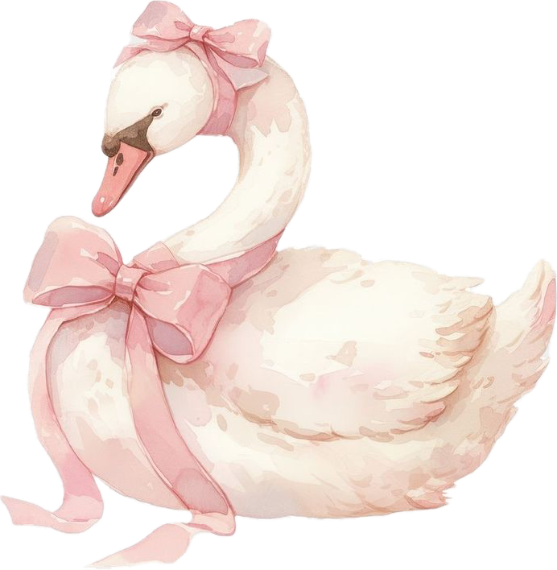

About Me 
I’m a final-year Cognitive Science & Psychology student at the University of Toronto with a CS minor, curious about how people think and how products should feel. I’m especially interested in attention, perception, and memory—and how insights from those areas can guide gentler, more intuitive interfaces.
Right now I’m building Melofy, a “Pinterest for music” that pairs short audio previews with visuals to capture moods and moments. I love bringing ideas to life. When I’m not tinkering with UI, you’ll probably find me at a café sipping matcha or enjoying a lovely nature walk.